Kudamatsu
Kudamatsu · Yamaguchi
Kudamatsu
Highlighted on the Yamaguchi map.
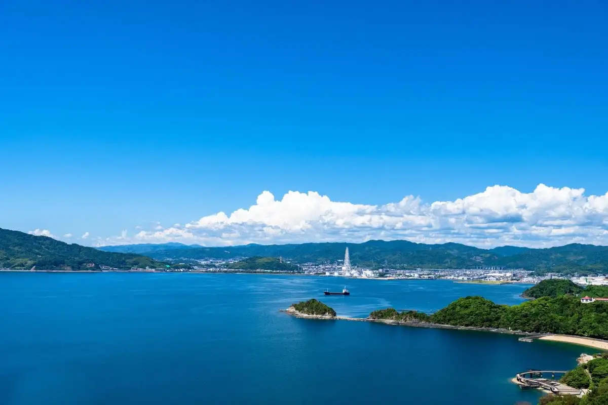
Dining
中華そば 紅蘭
Chuuka Soba Kouran
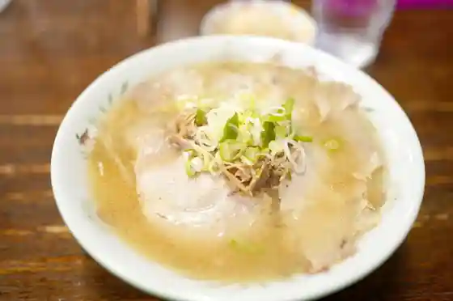
北斗亭
Hokuto Tei
のん太鮨 下松店
Non Ta Sushi Kudamatsu Mise
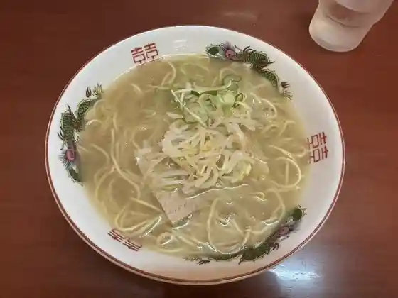
中華そば 蘭らん
Chuuka Soba Ran Ran
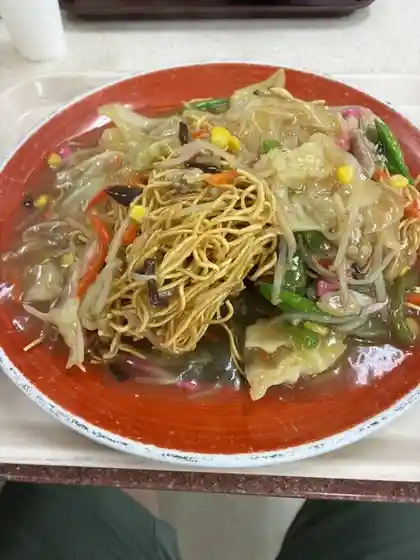
下松サービスエリア（上り線）フードコート
Kudamatsu Saabisueria ( Nobori Sen ) Fuudokooto
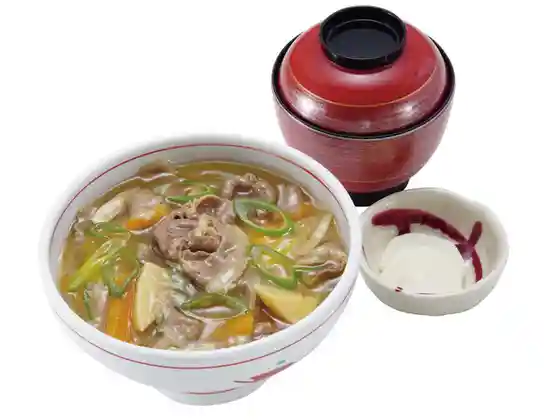
源内 下松店
Gennai Kudamatsu Mise
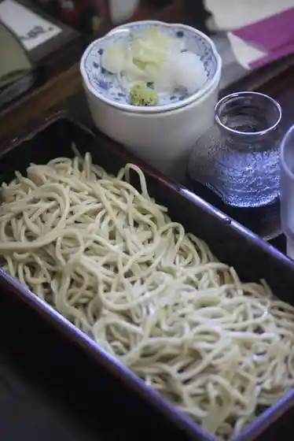
碧水庵
Hekisui Iori
国民宿舎 大城
Kokuminshukusha Ooshiro
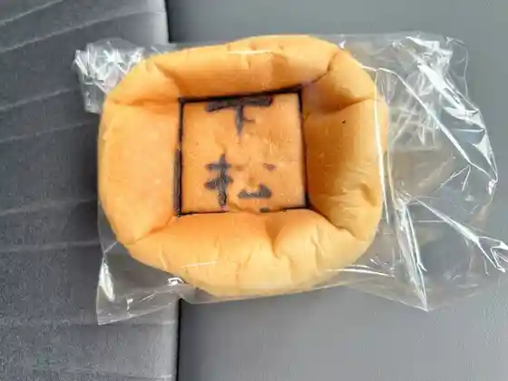
KEY'S CAFE 山口下松SA店
KEY&39S CAFE SA
廣華楼
Kou Hana Rou
めんくい
Menkui
ロゼッタ 下松
Rozetta Kudamatsu
パクチャン
Pakuchan
下松サービスエリア（下り線）フードコート
Kudamatsu Saabisueria ( Kudari Sen ) Fuudokooto
旬鮮美味 下松サービスエリア上り線
Jun Senbi Aji Kudamatsu Saabisueria Nobori Sen
下松サービスエリア上り線スナックコーナー
Kudamatsu Saabisueria Nobori Sen Sunakkukoonaa
どんどん サンリブ下松店
Dondon Sanribu Kudamatsu Mise
めし屋 しんちゃん
Meshi Ya Shinchan
蒼乃樹
Ao No Ki
レコパン 下松店
Rekopan Kudamatsu Mise
リヨンの森
Riyon No Mori
鳥勝
Tori Kachi
中華そば 一久 下松店
Chuuka Soba Kazuhisa Kudamatsu Mise
レストランいづみ
Resutoran Izumi
みほり峠 下松店
Mihori Touge Kudamatsu Mise
プティ・スリール
プティ・スリール
はちやま
Hachiyama
洋RUN 下松店
RUN
お食事処 美沢
O Shokuji Tokoro Misawa
晩酌と晩飯えびす
Banshaku To Banmeshi Ebisu
パンコッペ
Pankoppe
焼肉丼 炙り一番 ゆめタウン下松店
Yakiniku Donburi Aburi Ichiban Yume Taun Kudamatsu Mise
Sai Coffee Roastery 下松店
Sai Coffee Roastery
メルバニ
Merubani
レストランウエスタン
Resutoran'uesutan
華のうつわ
Hana Noutsuwa
中華料理 謝謝
Chuukaryouri Shieshie
蕎麦 降松
Soba Kou Matsu
RAMEN OF TODAY 下松店
RAMEN OF TODAY
Agio
Agio
下松サービスエリア（上り線）ショッピングコーナー
Kudamatsu Saabisueria ( Nobori Sen ) Shoppingukoonaa
下松サービスエリア下り線ショッピングコーナー
Kudamatsu Saabisueria Kudari Sen Shoppingukoonaa
珈琲倶楽部 Bear’s
Bears
すすめ！ヴァイキング 徳山東店
Susume ! Vaikingu Tokuyama Higashi Mise
焼肉 とーがらし
Yakiniku Toogarashi
レストラン・バーエシャロット
レストラン・バーエシャロット
コリアンキッチン オンマ ソン
Koriankitchin Onma Son
割烹升吉
Kappou Masukichi
ハマモトコーヒー
Hamamotokoohii
さくら
Sakura
和食処 花水木
Washoku Tokoro Kasui Ki
かざみどり 下松店
Kazamidori Kudamatsu Mise
北京料理 第一飯店
Pekin Ryouri Daiichi Hanten
こおひいや
Koohiiya
88 Cafe
88 Cafe
モントロー洋菓子店 下松本店
Montoroo Yougashi Mise Kudamatsu Honten
シュクルヴァン 下松店
Shukuruvan Kudamatsu Mise
和食工房にしだ
Washoku Koubou Nishida
ル・ヨシマサ
ル・ヨシマサ
ベルステラ
Berusutera
ヨウテイ マスヨシ
Youtei Masuyoshi
食蔵 升吉
Shoku Kura Masukichi
福春波男
Fuku Haru Nami Otoko
雑貨・cafe POPHILL
cafe POPHILL
トレビ アルク下松店
Torebi Aruku Kudamatsu Mise
二代目 餃子魂
Nidaime Gyouza Tamashii
餃子とハイボール 225
Gyouza To Haibooru 225
鳥乃蔵
Tori No Kura
カフェ トレビ
Kafe Torebi
801
801
BAERU
BAERU
ビジネスホテルみやこ
Bijinesuhoteru Miyako
さぬきうどん 天霧 下松店
Sanukiudon Amagiri Kudamatsu Mise
炭火焼肉ホルモン横丁 下松店
Sumibi Yakiniku Horumon Yokochou Kudamatsu Mise
じゅうじゅう
Juujuu
杏's
&39s
藤の屋お好み焼
Fuji No Ya O Konomi Yaki
たこ焼き 相もん屋
Tako Yaki Sou Mon Ya
冨士食堂
Fuji Shokudo
ハーゼンオール
Haazen'ooru
U'ilani 'elua
U&39ilani &39elua
だんだん
Dandan
STARRY CAFE+
STARRY CAFE
味楽庵
Aji Raku Iori
たこの星
Takono Hoshi
ハコカフェ
Hakokafe
下松サービスエリア 下り線 専門店屋外特設コーナー
Kudamatsu Saabisueria Kudari Sen Senmonten Okugai Tokusetsu Koonaa
麺市場 武居製麺
Men Shijou Takei Seimen
ブラウンモジョリズム
Buraunmojorizumu
小桜
Kozakura
笑酎屋 ぶにせ
Warai Chuu Ya Bunise
とうふとゆばの店 奴
Toufutoyubano Mise Yatsu
イバーノ
Ibaano
ととや幸月
Totoya Kougetsu
リストランテ ソリッゾ
Risutorante Sorizzo
レストラン ソワール
Resutoran Sowaaru
ひのゑ
Hinoe
菜さい来んさい! 下松店
Na Sai Kon Sai ! Kudamatsu Mise
まちのパン屋さんkiki
Machino Pan Ya San Kiki
長崎ちゃんめん 山口下松店
Nagasaki Chanmen Yamaguchi Kudamatsu Mise
ジョイフル 下松宮前店
Joifuru Kudamatsu Miyamae Mise
マクドナルド 下松店
Makudonarudo Kudamatsu Mise
焼肉 蔵元 下松桜町店
Yakiniku Kuramoto Kudamatsu Sakuramachi Mise
とりでん 周南店
Toriden Shuunan Mise
オーガニックキッチンエンジェル
Ooganikkukitchin'enjieru
菓匠茶屋 下松店
Kashou Chaya Kudamatsu Mise
ハースブラウン 下松店
Haasuburaun Kudamatsu Mise
コーヒーボーイ 下松店
Koohiibooi Kudamatsu Mise
ミスタードーナツ サンリブ下松ショップ
Misutaadoonatsu Sanribu Kudamatsu Shoppu
鉄網ダイニング 雅味
Tetsumou Dainingu Gami
カフェ マルシェ
Kafe Marushie
やきとり屋 河上
Yakitori Ya Kawakami
ショカフェ
Shokafe
ホルモン焼肉家どん
Horumon Yakiniku Ie Don
スイーツセレクトカフェ
Suiitsuserekutokafe
クダマツスタンド
Kudamatsusutando
天婦羅 和楽
Tenpura Wagaku
軽食喫茶ちぐさ
Keishoku Kissa Chigusa
菓舗 松の実 ザ・モール周南星プラザ店
菓舗 松の実 ザ・モール周南星プラザ店
HOTEL AZ 山口下松店
HOTEL AZ
大阪屋すし
Oosaka Ya Sushi
下松市役所睦会食堂
Kudamatsu Shiyakusho Mutsumi Kaishoku Dou
民芸茶屋 おか倉
Mingei Chaya Oka Kura
炎S 下松店
Honoo S Kudamatsu Mise
お菓子のくにい
O Kashi Nokunii
国民宿舎 大城 ティーラウンジ
Kokuminshukusha Ooshiro Teiiraunji
おべるじゅ
Oberuju
AZcafe Shidaka 山口下松店
AZcafe Shidaka
禾
Nogi
ろくの家 下松店
Rokuno Ie Kudamatsu Mise
吉野家 徳山東インター店
Yoshinoya Tokuyama Higashi Intaa Mise
カレーハウス CoCo壱番屋 下松末武店
Kareehausu Coco Ichiban Ya Kudamatsu Suetake Mise
はま寿司 下松店
Hama Sushi Kudamatsu Mise
ナマステ タージマハル ゆめタウン下松店
Namasute Taajimaharu Yume Taun Kudamatsu Mise
はなまるうどん ゆめタウン下松店
Hanamaruudon Yume Taun Kudamatsu Mise
リンガーハット ゆめタウン下松店
Ringaahatto Yume Taun Kudamatsu Mise
ボンズクレープ ゆめタウン下松店
Bonzukureepu Yume Taun Kudamatsu Mise
山口和牛 泉商
Yamaguchi Wagyuu Izumi Shou
セブンイレブン 下松望町店
Sebun'irebun Kudamatsu Nozomichou Mise
唐揚げ専門店 熊本とりから家 下松店
Karaage Senmonten Kumamoto Torikara Ie Kudamatsu Mise
CAFE&WEDDING Metti al sole
CAFE&WEDDING Metti al sole
SUN MARCHE
SUN MARCHE
山一
Yamaichi
炭火串焼き はち
Sumibi Kushiyaki Hachi
山小屋 下松清瀬店
Yamagoya Kudamatsu Kiyose Mise
かっぱ寿司 下松店
Kappa Sushi Kudamatsu Mise
炭火焼肉屋さかい 下松店
Sumibi Yakinikuya Sakai Kudamatsu Mise
麺場 田所商店 下松店
Men Ba Tadokoro Shouten Kudamatsu Mise
果子乃季 下松店
Kashi No Ki Kudamatsu Mise
百菜 旬 サンリブ下松店
Hyaku Na Jun Sanribu Kudamatsu Mise
豆子郎 下松末武大通り店
Mame Jirou Kudamatsu Suetake Oodoori Mise
ドトールコーヒーショップ ゆめタウン下松店
Dotoorukoohiishoppu Yume Taun Kudamatsu Mise
モスバーガー 下松店
Mosubaagaa Kudamatsu Mise
ガスト 下松店
Gasuto Kudamatsu Mise
レストラン庄屋 ゆめタウン下松店
Resutoran Shouya Yume Taun Kudamatsu Mise
サブウェイ ゆめタウン下松店
Sabuuei Yume Taun Kudamatsu Mise
なか卯 下松望町店
Naka U Kudamatsu Nozomichou Mise
しゃぶしゃぶ温野菜 下松店
Shabushabu Onyasai Kudamatsu Mise
マクドナルド 下松サンリブ店
Makudonarudo Kudamatsu Sanribu Mise
ほうえい堂 下松サービスエリア店
Houei Dou Kudamatsu Saabisueria Mise
や台ずし 下松駅北口町
Ya Dai Zushi Kudamatsu Eki Kitaguchi Machi
ジョイフル 下松河内店
Joifuru Kudamatsu Kawauchi Mise
ペッパーランチ ゆめタウン下松店
Peppaaranchi Yume Taun Kudamatsu Mise
牛角 下松店
Gyuukaku Kudamatsu Mise
お好み一番地 ゆめタウン下松店
O Konomi Ichiban Chi Yume Taun Kudamatsu Mise
おむらいす亭 山口ゆめタウン下松店
Omuraisu Tei Yamaguchi Yume Taun Kudamatsu Mise
村さ来 下松店
Murasaki Kudamatsu Mise
シャトレーゼ 下松店
Shatoreeze Kudamatsu Mise
果子乃季 サンリブ下松店
Kashi No Ki Sanribu Kudamatsu Mise
ケンタッキーフライドチキン ゆめタウン下松店
Kentakkiifuraidochikin Yume Taun Kudamatsu Mise
和風ダイニング 一令
Wafuu Dainingu Ichi Rei
おむすび亭
Omusubi Tei
ゴルフ＆ダーツ Green
& Green
ピアノフォルテ
Pianoforute
ぎゃらりー野草の庭
Gyararii Yasou No Niwa
Ban
Ban
マックスバリュ 山田店
Makkusubaryu Yamada Mise
ほうえい堂 本店
Houei Dou Honten
鮮菜栄屋
Sen Na Sakae Ya
オリエンタル
Orientaru
乃が美はなれ 下松販売店
No Ga Bi Hanare Kudamatsu Hanbaiten
ワ ラウンジ
Wa Raunji
ごはんどき 下松店
Gohandoki Kudamatsu Mise
ごちそう維新からあげ
Gochisou Ishin Karaage
もち吉 下松店
Mochi Kichi Kudamatsu Mise
nanaseto
nanaseto
フランソワ 星プラザ下松店
Furansowa Hoshi Puraza Kudamatsu Mise
メイクダイニング 燦
Meikudainingu San
味菜
Ajisai
ibasyo
ibasyo
プルネール 下松店
Puruneeru Kudamatsu Mise
だがし 夢や 星プラザ店
Dagashi Yume Ya Hoshi Puraza Mise
たこまる
Takomaru
LAWSON 下松駅南店
LAWSON
ひろ子
Hiro Ko
ピザハット 下松瑞穂店
Pizahatto Kudamatsu Mizuho Mise
スイートホーム 下松店
Suiitohoomu Kudamatsu Mise
笠戸島家族旅行村 売店
Kasado Shima Kazokuryokou Mura Baiten
菓舗 松の実 本店
Ka Ho Matsu No Mi Honten
ピザ・カリフォルニア 下松店
ピザ・カリフォルニア 下松店
さいさいカフェ
Saisai Kafe
3COINS+plus ゆめタウン下松店
3COINSplus
無印良品 ゆめタウン下松店
Mujirushiryouhin Yume Taun Kudamatsu Mise
ほっともっと 末武大通り店
Hottomotto Suetake Oodoori Mise
やきとり竜鳳
Yakitori Ryuuhou
LAWSON 下松楠木町一丁目店
Lawson Kudamatsu Kusunoki Machi Itchoume Mise
コスモス 下松店
Kosumosu Kudamatsu Mise
とり秀 下松店
Tori Shuu Kudamatsu Mise
居酒屋 味昇
Izakaya Aji Noboru
おやつ工房 haru・米
おやつ工房 haru・米
焼肉喜楽
Yakiniku Kiraku
LAWSON 下松駅北口店
LAWSON
居酒屋のんちゃん
Izakaya Nonchan
まねき猫や
Maneki Neko Ya
おとずれ
Otozure
和食処 なかや
Washoku Tokoro Nakaya
hinacafe
hinacafe
ほっともっと 下松中央店
Hottomotto Kudamatsu Chuuou Mise
aotsubaki
aotsubaki
路
Michi
やまがた
Yamagata
誠寿司
Makoto Sushi
以多屋
I Taya
味街道
Aji Kaidou
Gourmet Road YasuDA
Gourmet Road YasuDA
味一
Aji Ichi
Koran
Koran
LE YOSHIMASA
LE YOSHIMASA
Maidookini Shokudo Yamaguchi Kudamatsu
Maidookini Shokudo Yamaguchi Kudamatsu
Misawa Restaurant
Misawa Restaurant
Curry House CoCo Ichibanya Kudamatsu Suetake
Curry House CoCo Ichibanya Kudamatsu Suetake
Ikedaya
Ikedaya
Kuramoto Kudamatsu
Kuramoto Kudamatsu
Shunsen Bimi Kudamatsu Service Area Up Line
Shunsen Bimi Kudamatsu Service Area Up Line
Restaurant Soir
Restaurant Soir
Taiwanese Restaurant Kirakuen
Taiwanese Restaurant Kirakuen
Italian Restaurant Sorriso
Italian Restaurant Sorriso
Cafe Kururi
Cafe Kururi
Konnichiwa Kudamatsu
Konnichiwa Kudamatsu
Restaurant Western
Restaurant Western
Kyushu Ramen Nagomi Kudamatsu
Kyushu Ramen Nagomi Kudamatsu
Gusto Kudamatsu
Gusto Kudamatsu
Bondy
Bondy
Korean Kitchen Ondol
Korean Kitchen Ondol
Tonkatsu Restaurant Kurashiki Hamada Ya
Tonkatsu Restaurant Kurashiki Hamada Ya
Ofu Ryori Lyonno Mori
Ofu Ryori Lyonno Mori
Chinese Noodle Shimomatsu
Chinese Noodle Shimomatsu
Sazantei Tokuyama
Sazantei Tokuyama
Bunise Shochuya
Bunise Shochuya
Northeastern Chinese Geishunkan
Northeastern Chinese Geishunkan
Sanuki Udon Sanshu
Sanuki Udon Sanshu
Joyfull
Joyfull
Chinese Noodle Ranran
Chinese Noodle Ranran
Genkotsu Ramen Yumetowm Kudamatsu
Genkotsu Ramen Yumetowm Kudamatsu
Joyfull
Joyfull
Tajimaya Shimomatsu
Tajimaya Shimomatsu
Heisan Sunlive Kudamatsu
Heisan Sunlive Kudamatsu
Kappo Komori
Kappo Komori
Daiichi Restaurant
Daiichi Restaurant
Agetate Kinten Yumetowm Kudamatsu
Agetate Kinten Yumetowm Kudamatsu
Kyushu Chikuho Ramen Yamagoya Kudamatsu Kiyose
Kyushu Chikuho Ramen Yamagoya Kudamatsu Kiyose
Kanmi Dokoro Azuki
Kanmi Dokoro Azuki
Sazantei The Mall Shunan
Sazantei The Mall Shunan
Sohonke Shinatora Kudamatsu
Sohonke Shinatora Kudamatsu
Sweet Home Kudamatsu
Sweet Home Kudamatsu
Hanagoyomi The Mall Shunan
Hanagoyomi The Mall Shunan
Karin
Karin
Kokaro
Kokaro
Ringer Hut Yumetowm Kudamatsu
Ringer Hut Yumetowm Kudamatsu
Bar Solas
Bar Solas
Nishida Washoku Kobo
Nishida Washoku Kobo
Yataizushi Kudamatsu eki Kitaguchi cho
Yataizushi Kudamatsu eki Kitaguchi cho
Cafe Marche
Cafe Marche
Light Meal Cafe Chigusa
Light Meal Cafe Chigusa
Matsumoto
Matsumoto
Ashibe Karaoke Cafe
Ashibe Karaoke Cafe
Sho Cafe
Sho Cafe
Enya Mansai
Enya Mansai
Cafe Trevi
Cafe Trevi
Garyuyaki Yoridori Kudamatsu
Garyuyaki Yoridori Kudamatsu
Gran Pale Shunan
Gran Pale Shunan
Restaurant Hoshifurumachi
Restaurant Hoshifurumachi
Pepper Lunch Youme Town Kudamatsu
Pepper Lunch Youme Town Kudamatsu
Brown Mojo Rhythm
Brown Mojo Rhythm
Kineya Shimomatsu The Mall
Kineya Shimomatsu The Mall
Hinokoei Kudamatsu Main Store
Hinokoei Kudamatsu Main Store
Biinzu Coffee
Biinzu Coffee
Honkekamadoya Nishi Kudamatsu
Honkekamadoya Nishi Kudamatsu
Chateraise Kudamatsu
Chateraise Kudamatsu
Ryugu The Mall Shunan
Ryugu The Mall Shunan
Ajito
Ajito
Keizen Kichi
Keizen Kichi
La Vie en Rose
La Vie en Rose
Kagetsu
Kagetsu
Sakae Machi
Sakae Machi
Kawanoya
Kawanoya
Shan Tours
Shan Tours
Chakaiseki No Igawa
Chakaiseki No Igawa
Minatoya Kissa
Minatoya Kissa
Kumamoto Torikaraya
Kumamoto Torikaraya
Teishokuya Hyakusai Shun Sunlive Kudamatsu
Teishokuya Hyakusai Shun Sunlive Kudamatsu
Midoriya
Midoriya
Ninobo
Ninobo
Ox Ford
Ox Ford
Tachibana
Tachibana
Gyukaku Kudamatsu
Gyukaku Kudamatsu
Erumita
Erumita
Tamayura Katei Ryori No Mise
Tamayura Katei Ryori No Mise
Isomuraya
Isomuraya
Juju
Juju
Organic Kitchen Angel
Organic Kitchen Angel
Karaoke Nanohana
Karaoke Nanohana
Kadoya Shokudo
Kadoya Shokudo
Japanese Restaurant Nakaya
Japanese Restaurant Nakaya
Italian Kitchen Bruno
Italian Kitchen Bruno
Nanako
Nanako
Tomichan
Tomichan
Tsubohan
Tsubohan
Karaoke Cafe Nihombashi
Karaoke Cafe Nihombashi
Japanese Restaurant Harada
Japanese Restaurant Harada
Restaurant Bae Syarotto
Restaurant Bae Syarotto
Tsukito Niji
Tsukito Niji
Koryori Shizuchan
Koryori Shizuchan
Inakajaya Hatchan
Inakajaya Hatchan
Obanzai Bar Ikuyo
Obanzai Bar Ikuyo
Kumachan
Kumachan
Kisoji
Kisoji
Tempura Waraku
Tempura Waraku
Masamoto Shokudo
Masamoto Shokudo
Banban Iki Iki
Banban Iki Iki
Uomasa
Uomasa
Ikkyuan
Ikkyuan
Tsukushi
Tsukushi
Kyohei
Kyohei
Jail
Jail
Yotei Masuyoshi
Yotei Masuyoshi
Kiraku
Kiraku
Chisana Kaiseki Kaburaya
Chisana Kaiseki Kaburaya
Zuito
Zuito
Hanazen
Hanazen
Ryoridojo Irori Isshobin
Ryoridojo Irori Isshobin
Yatsu Tofu Cuisine
Yatsu Tofu Cuisine
Wasshoi Honpo
Wasshoi Honpo
Mum
Mum
Sun Planes Ikunoya
Sun Planes Ikunoya
Bar Rin
Bar Rin
Bishuran
Bishuran
Relaxation Salon Thai Koshiki Massage Cafe Ban
Relaxation Salon Thai Koshiki Massage Cafe Ban
Okonomi Ichibanchi Yumetowm Kudamatsu
Okonomi Ichibanchi Yumetowm Kudamatsu
Francois Hitorishizuka Hoshi Plaza Kudamatsu
Francois Hitorishizuka Hoshi Plaza Kudamatsu
Izakaya Kiho
Izakaya Kiho
Daikokuya Cafe
Daikokuya Cafe
Bar TimBar
Bar TimBar
Sanyodo Shunan
Sanyodo Shunan
Yoshoku Ito
Yoshoku Ito
Seafood Robata and Earthen Pot Rice Ebisu
Seafood Robata and Earthen Pot Rice Ebisu
Cafe Dining Umaya Kudamatsu Base
Cafe Dining Umaya Kudamatsu Base
Nekozeno Tanuki
Nekozeno Tanuki
Yakinikuotsubo
Yakinikuotsubo
Restaurant Izumi The Mall Shunan
Restaurant Izumi The Mall Shunan
Wampaku
Wampaku
Allre
Allre
Ajigokoro
Ajigokoro
Salon Dethe Patissier Ys
Salon Dethe Patissier Ys
Stay
ビジネスホテルみやこ
Bijinesuhoteru Miyako
くだまつステーションホテル
Kudamatsu Suteeshonhoteru
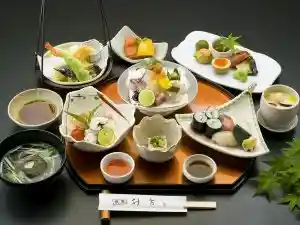
サンホテル下松
Sanhoteru Kudamatsu
HOTEL AZ 山口下松店
HOTEL AZ

国民宿舎大城
Kokuminshukusha Ooshiro
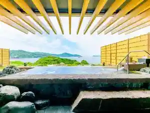
Sights
Kaijo Promenade (Puromunado)
Kasado Shima
Kokuminshukusha Oshiro
Hirameki Park Kasado Shima (Kudamatsu Saibai Gyogyo Center)
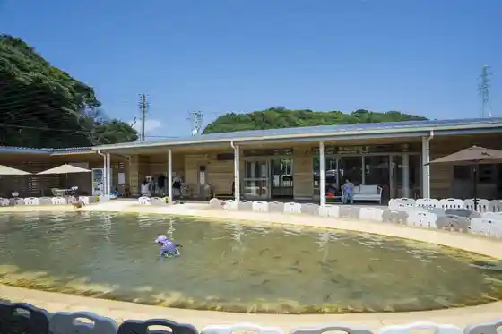
Oshiro Onsen Shiosai Baths
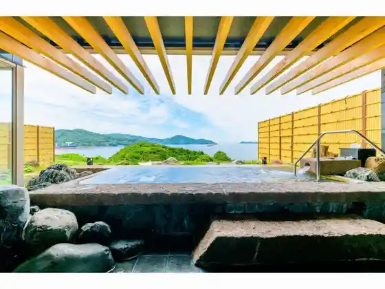
Hikari City Kudamatsu Shunan City Sansetto / Shunan Kojo Yakei Kuruzu
Kudamatsu Supotsu Park
Yuhi Misaki (Kasado Shima)
Kasado Shima Kazokuryoko Village
Kochi Zu Wo Katate Nimachiwo Aruko U (Hanaoka Hen) Yasashii Kosu Ari
Shiokaze Garden
Hanaguri Beach
Kome Izumi Mizumi (Suetake Kawa Dam)
Hanaoka Fukutoku Inari Sha
Hanaoka Hachiman Shrine
Taki no Kuchi River Park
Kyu Naito Ieyashiki Ato
Kudamatsu Tourist Information
Kudamatsu Kenko Park (Tsurugahama Onsen)
Kochi no Kirei Na Mizu to Kuki De Hagukuma Reta (Ki no Ko Saibai Kojokengaku Shukaku Experience)
Kasado Bridge
Gaishi Park
Sendo Batsugun ! Daichi no Megumi (Nosakubutsu no Shukaku Experience)
On Ken Dam
Hanaoka Michi no Oashisu Bara Sono
Myoken Miya Shuto Tera
Kirido Kawa River Park
Akai Bo Taho to
Himawari Rodopurojiekuto
Kudamatsu Park
Setonaikai no Odaya Kana Umi Wo Shiro U ! (Teichiami Gyogyo Experience)
Setochi no Odaya Kana Namioto Wo Kiki Nagara (Sansetto Yoga Experience)
Ko Matsu Shrine
Hoshi no to
Miyahara Burial Mound
Chi no Megumi Wo, Daichi De Shokusu ! Kudamatsu Autodoakukkingu Experience
Hanaoka Kan Ba Atochi
Kasado Shima Toreiruran no Kosudirekutagaannai Suru (Toreiruranningu Haikingu Experience)
Kudamatsu Kanko Boranteiagaido no Kai
Otona no Zeitaku Jikan ! (Kaori Yutaka Na Kohii no En Re Ho Experience)
Kanawa Shrine
Ishin Jusan Nin Haka
Machi no Denkiya Sanga Oshie Ru (Kudamaru Figyua Zukuri Experience)
Kudamatsu Yakusho